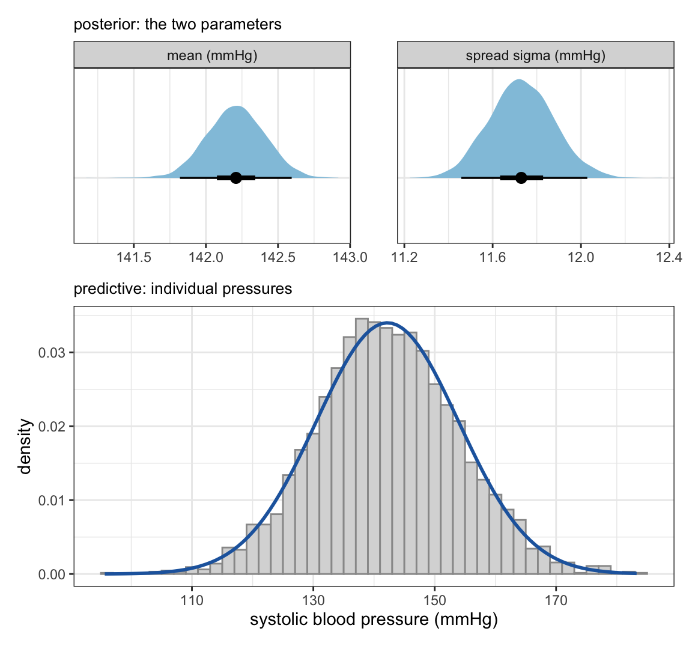
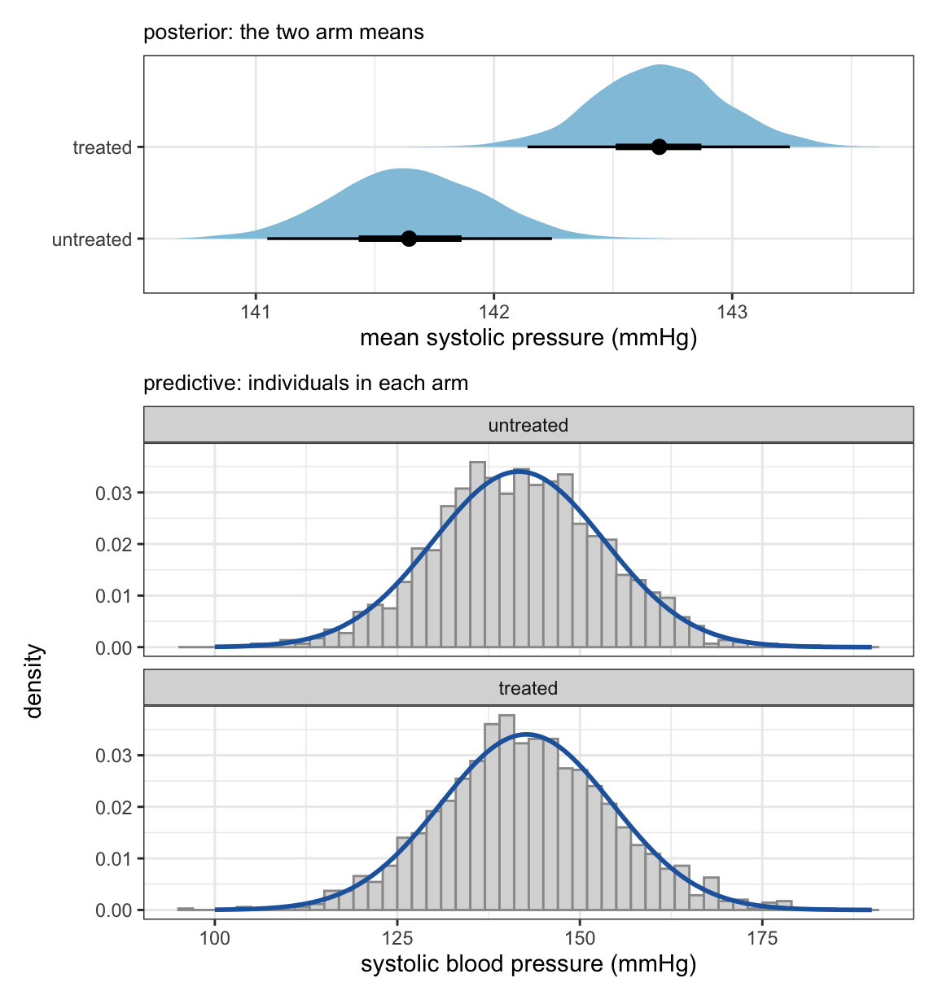
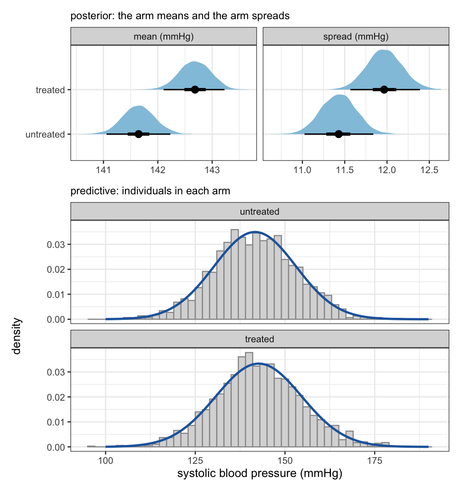
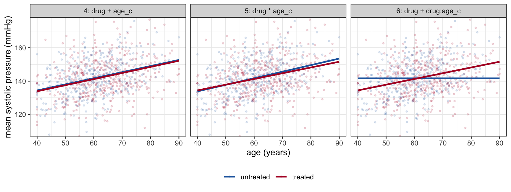
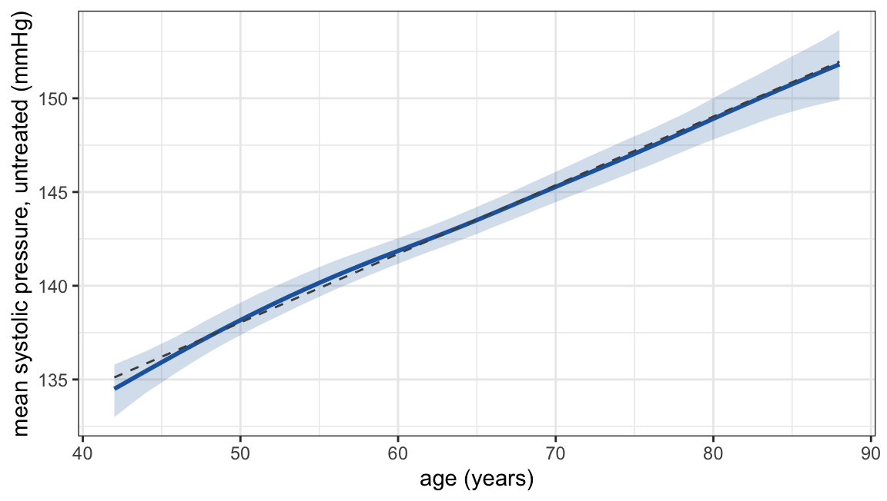
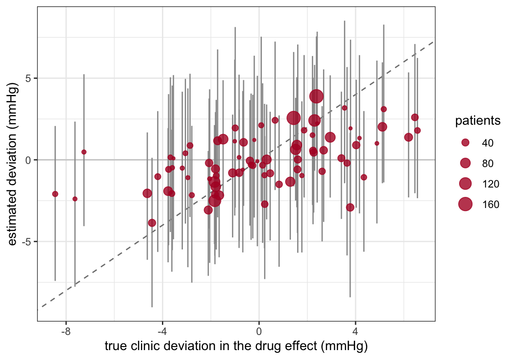

pri_1 <- c(prior(normal(145, 20), class = "Intercept"),
prior(exponential(0.1), class = "sigma"))
m1 <- brm(sbp ~ 1, data = clinics, family = gaussian(), prior = pri_1,
file = "models/ladder_m1", file_refit = "on_change")Appendix F — The world through the eyes of a regression model: silent assumptions and regression conventions
One can view a regression formula as a short list of claims about how the outcome came about. In effect, we pretend that the regression model is a thinking machine and its formula defines how it sees the world. For example, the model sbp ~ drug knows that every patient’s systolic pressure is a draw from a normal distribution (regardless of the actual distribution visible in the data); that the distribution has one of two means, depending on treatment; that its spread is the same for everyone, regardless of treatment; and that nothing else that differs between patients matters. If you use this model then, by default, you accept those claims, at least for the duration of the analysis.
This appendix makes the worldviews of some common model classes explicit. It takes one outcome, systolic blood pressure, and three predictors, a drug, age and the clinic, and fits a sequence of models in which each step changes one claim. For every model it states the model, lists what the model assumes about the world, sets that list beside what a reader with clinical and epidemiological knowledge would assume, and reports what the fitted model says. The comparison of the two lists is the exercise. The fitted numbers show what following a claim costs when the claim is wrong.
The data are the clustered cohort of Chapter 28: 3 211 patients in 80 clinics, with post-baseline systolic pressure sbp in mmHg, treatment drug (0/1), age in years (and age_c, age in decades centred at 62), and clinic. The grouping variable is called a clinic here; everything said about it applies to a hospital, a ward, a practice or any other grouping of patients. The cohort is simulated, so the drug’s true average effect on pressure is known: -12.05 mmHg. The data also contain severity, the latent illness severity that drives both prescribing and pressure (confounding by indication). The reader knows that it exists. It is withheld from the models until the end, because the point of the exercise is to see what a model does with the variables it is given and with those it is not.
F.1 How to read a formula as a set of claims
A brms formula fixes four things, and a change at any one of them is a different claim about the world.
- The distribution.
family = gaussian()says the outcome, given everything the model is told (e.g. given the predictors), is normally distributed. This is a claim about the shape and the tails of the unexplained variation, not about the raw outcome. - Which parameters are modelled. By default only the mean is a function of the predictors; the spread \(\sigma\) is constant for everyone.
bf(sbp ~ drug, sigma ~ drug)makes the spread a function of treatment as well. - The functional form.
drug + age_csays the two contributions add and that age’s contribution is a straight line;drug * age_clets the drug’s contribution change with age;s(age)lets age’s contribution be a curve. - Which units share parameters.
sbp ~ druggives all patients the same parameters.+ clinicgives each clinic its own baseline, estimated on its own.+ (1 | clinic)gives each clinic its own baseline but says the baselines are draws from one distribution.
The priors are a fifth list, and they are part of what the model assumes. This appendix keeps them weakly informative on the mmHg scale and the same from one model to the next, so that the differences between models come from structure. Appendix E maps the full syntax; Chapter 23 is where the priors are examined.
For each model below, the reader is asked to write two lists before looking at the fit: what the formula assumes, and what she assumes. Where the two disagree, the fit will show which way the disagreement pushes the estimate. Table F.3 collects the first list for every model.
F.2 Model 1: one distribution for everyone
\[y_i \sim \text{Normal}(\mu, \sigma)\]
What the model assumes.
- Every patient’s pressure is a draw from the same normal distribution. Two numbers describe the population, a centre \(\mu\) and a spread \(\sigma\); the distribution is symmetric and its tails fall off at the normal’s rate.
- Patients are exchangeable. Which row a value came from carries no information, so the model’s prediction is the same for every patient. This is a statement about the model’s state of knowledge, not about the world: pressure may depend on age, but the model is not told age, so patients are indistinguishable to it.
- Draws are independent. Having seen one patient, the model learns about \(\mu\) and \(\sigma\) and nothing else that bears on the next patient.
What you know. You know each patient’s treatment, age and clinic, so for you the patients are not exchangeable. They are exchangeable only conditionally, among patients alike on those variables. Model 1 uses none of that knowledge. Pressure rises with age, is lowered by the drug, and differs between clinics, so the one distribution is a mixture of many. Its \(\sigma\) is not biological variation or measurement noise alone; it is the sum of every difference the model is not told about. A single clinic reading is a noisy measure of a patient’s usual pressure, so part of \(\sigma\) is measurement. Two patients from the same clinic are more alike than two from different clinics, which contradicts claim 3; the consequence is for the intervals, which are computed as if each patient contributed independent information. The normal distribution allows negative pressures; at this centre and spread that is a formal defect with no practical consequence.
What the fit says. The model’s whole description of the world is a normal curve with mean 142.2 mmHg and standard deviation 11.7 mmHg (Figure F.1). The figure separates two objects that are easy to confuse. The top panel is the posterior: what the model has learned about its two parameters, each pinned down to a fraction of a mmHg by 3 211 patients. The bottom panel is the predictive distribution: what the model expects for one patient’s pressure, which is as wide as \(\sigma\) and does not narrow as patients accumulate. Models 2 and 3 are drawn the same way. sbp ~ 1 is what Chapter 28 calls complete pooling (of information).

Compare
Before reading on, write down how much of this \(\sigma\) you expect to be removed by telling the model about treatment, about age and about the clinic. The later models report the answer. The gap between your guess and the result is informative about which variable carries the most variation in pressure, and that need not be the variable that carries the most confounding.
F.3 Model 2: two means, one spread
pri_b <- c(pri_1, prior(normal(0, 25), class = "b"))
m2 <- brm(sbp ~ drug, data = clinics, family = gaussian(), prior = pri_b,
file = "models/ladder_m2", file_refit = "on_change")\[\begin{aligned} y_i &\sim \text{Normal}(\mu_i, \sigma) \\ \mu_i &= \alpha + \beta\, \text{drug}_i \end{aligned}\]
What the model assumes.
- There are two sub-populations, with means \(\alpha\) and \(\alpha + \beta\).
- The spread is the same in both. The model does not assume that every treated patient’s pressure is shifted by \(\beta\); it records a difference in means and asserts that the spread is unchanged, which a constant shift would produce but which other patterns would produce as well.
- Within each arm, patients are exchangeable in the same sense as in model 1. The model has no term for anything else, so whatever else differs between the arms is attributed to \(\beta\).
- \(\beta\) is the difference in mean pressure between the two groups as they are. The formula does not know whether that difference is the drug’s effect.
What you know. For \(\beta\) to be the drug’s effect, the arms must be exchangeable in the causal sense of Chapter 11, \(Y(a) \perp A\): the treated would have had the untreated arm’s pressure had they not been treated. The model neither assumes this nor checks it. Doctors treat the sick. Patients given the drug had higher pressure and greater illness severity before treatment, so causal exchangeability fails in a known direction: \(\beta\) will be the drug’s effect plus the pre-treatment difference between the arms. In these data the treated are also older, by 4.2 years on average. Whether \(\beta\) is a causal effect is settled by this knowledge, not by the fit (Chapter 21).
What the fit says. The treated have higher mean pressure than the untreated, by 1.05 mmHg (95% interval 0.23 to 1.84). The truth is -12.05. The sign is wrong because the difference between the arms is dominated by who was treated, not by what the treatment did. The spread has barely changed from model 1, 11.72 against 11.73 mmHg: in these data treatment explains almost none of the variation in pressure, because its effect is cancelled by the selection into treatment. Figure F.2 shows the posteriors of the two arm means, which overlap little, above the two predictive distributions, which overlap almost entirely: a difference the model is confident about can still be small against the spread of individual pressures.

Compare
List what you know about the people who are prescribed a blood-pressure drug that the model has not been told. For each item, say whether it raises or lowers pressure, and whether it is more common among the treated. Items that do both are confounders, and the direction of their bias on \(\beta\) follows from the two signs.
F.4 Model 3: two means, two spreads
## no prior on class sigma here: sigma is modelled, so it is not a parameter
pri_3 <- c(prior(normal(145, 20), class = "Intercept"),
prior(normal(0, 25), class = "b"),
prior(normal(2.5, 0.5), class = "Intercept", dpar = "sigma"),
prior(normal(0, 0.5), class = "b", dpar = "sigma"))
m3 <- brm(bf(sbp ~ drug, sigma ~ drug), data = clinics, family = gaussian(),
prior = pri_3, file = "models/ladder_m3", file_refit = "on_change")\[\begin{aligned} y_i &\sim \text{Normal}(\mu_i, \sigma_i) \\ \mu_i &= \alpha + \beta\, \text{drug}_i \\ \log \sigma_i &= \gamma_0 + \gamma_1\, \text{drug}_i \end{aligned}\]
What the model assumes. As model 2, except that the spread may differ between the arms. The spread is modelled on the log scale, so \(\exp(\gamma_1)\) is the ratio of the treated to the untreated standard deviation. This is distributional regression: a predictor is allowed to act on a parameter other than the mean. The claim that nothing else differs between the arms is unchanged.
What you know. A drug’s effect differs between patients, through dose, adherence, the cause of the hypertension and the patient’s physiology, so the pressures of treated patients may be more spread out than those of untreated patients if the effect varies, or less spread out if the drug lowers the highest pressures most. The treated are also a selected group, which can change their spread in either direction. The model reports the net result and cannot separate these sources.
What the fit says. The fitted standard deviations are 11.4 mmHg among the untreated and 12.0 mmHg among the treated, a ratio of 1.05 (95% interval 1.00 to 1.10). Figure F.3 shows the posteriors of both means and both spreads above the predictive distributions, whose widths now differ. The difference in means is 1.04 mmHg, against 1.05 in model 2. With a single binary predictor each arm’s mean is estimated from that arm’s own patients whether or not the spreads are tied together, so releasing the equal-spread claim leaves the difference in means essentially unchanged. What it changes is the predictive distribution for each arm, and the status of model 2’s equal-spread claim, which is now estimated rather than imposed. Most of the extra spread among the treated has a cause that model 8 names: the clinic. Which clinic a patient attends predicts both whether the patient is treated and the patient’s baseline pressure, so the two arms draw on different mixes of clinics, and the treated arm carries more of the between-clinic variation.

Compare
Which parameter of the outcome’s distribution does your scientific question concern? A question about whether the drug lowers pressure is about the mean; a question about whether it makes pressure more predictable, or about how many treated patients remain above a threshold, is about the spread as well. A model that fixes \(\sigma\) cannot answer the second kind of question.
F.5 Model 4: a second predictor, added
m4 <- brm(sbp ~ drug + age_c, data = clinics, family = gaussian(), prior = pri_b,
file = "models/ladder_m4", file_refit = "on_change")\[\begin{aligned} y_i &\sim \text{Normal}(\mu_i, \sigma) \\ \mu_i &= \alpha + \beta_1\, \text{drug}_i + \beta_2\, \text{age}_i \end{aligned}\]
What the model assumes.
- Age’s contribution is a straight line: each decade adds \(\beta_2\) mmHg, the same amount at 45 as at 85.
- The two contributions add up. The drug’s effect is \(\beta_1\) at every age; equivalently, the age slope is the same in both arms, so the two fitted lines are parallel (Figure F.4, left).
- The patient-level variation is the same at all ages and in both arms: every combination of arm and age has the same standard deviation of pressures.
- Nothing else differs between treated and untreated patients of the same age. \(\beta_1\) is now the difference in mean pressure between treated and untreated patients of the same age, which is a different quantity from model 2’s \(\beta\).
What you know. Blood pressure rises with age, and the treated patients are older, so part of model 2’s error came from leaving age out; claim 4 is an improvement on model 2’s version. But as severity is actually the main reason for treatment and it is not in the model, claim 4 is still seriously wrong. Whether the rise with age is linear between 40 and 90, and whether the drug works equally at all ages, are assumptions you may or may not be prepared to make; the model makes both silently.
What the fit says. A decade of ageing adds 3.66 mmHg. As the drug’s coefficient is -0.50 mmHg (95% interval -1.34 to 0.30), adjusting for age moved it by only the meagre 1.5 mmHg towards the truth, because the model was told about age and not about severity, and it reports the within-age difference, which is still mostly severity. The spread fell from 11.7 to 11.1 mmHg: age explains more of the variation in pressure than treatment does, in these data.
Compare
Of the three predictors in this appendix, which could move the drug’s estimate towards the truth if added, and which could not? The answer depends on whether the variable is a cause of both treatment and pressure, not on how much of the variation in pressure it explains. Age reduced the unexplained spread by 0.6 mmHg and moved the estimate by 1.5 mmHg.
F.6 Model 5: the drug’s effect may change with age
m5 <- brm(sbp ~ drug * age_c, data = clinics, family = gaussian(), prior = pri_b,
file = "models/ladder_m5", file_refit = "on_change")\[\begin{aligned} y_i &\sim \text{Normal}(\mu_i, \sigma) \\ \mu_i &= \alpha + \beta_1\, \text{drug}_i + \beta_2\, \text{age}_i + \beta_3\, \text{drug}_i \times \text{age}_i \end{aligned}\]
What the model assumes. The drug’s effect is \(\beta_1 + \beta_3\, \text{age}_i\), a straight-line function of age; equivalently, the age slope differs between the arms by \(\beta_3\), so the two fitted lines may cross (Figure F.4, centre). The dependence on age is restricted to a straight line, the spread is still one number, and the claim that nothing else differs is unchanged. \(\beta_1\) is the drug’s effect at age_c = 0, that is at age 62; its meaning depends on where age was centred, so it is not a main effect in any absolute sense.
What you know. Whether a blood-pressure drug works differently in older patients is a clinical question with plausible mechanisms on both sides. Write down which direction you expect and roughly how large a difference per decade you would find surprising. The model will report one straight line through whatever the pattern is.
What the fit says. The interaction coefficient is -0.49 mmHg per decade (95% interval -1.25 to 0.23). The interval includes zero and also includes differences of a few mmHg across the age range, so the data are compatible with the drug acting the same at every age and with a moderate dependence; the interval, not the point estimate, is the finding. The drug’s estimated effect at age 45 is 0.33 mmHg and at age 85 it is -1.64 mmHg. Averaged over the cohort’s age distribution, the marginal contrast is -0.52 mmHg, against -0.50 from the additive model: including the interaction did not change the headline value and turned model 4’s silent claim into an estimated quantity. This is why Chapter 24 includes interactions by default when the modifier is plausible and the cells are populated.
Compare
Model 4 asserted \(\beta_3 = 0\) without estimating it. Model 5 estimates it. Omitting a term is far from a neutral choice; it forces a point mass at zero for it. When would you prefer the omission, and what would you need to know about the world to justify it?
F.7 Model 6: a product term without its main effect
m6 <- brm(sbp ~ drug + drug:age_c, data = clinics, family = gaussian(), prior = pri_b,
file = "models/ladder_m6", file_refit = "on_change")\[\begin{aligned} y_i &\sim \text{Normal}(\mu_i, \sigma) \\ \mu_i &= \alpha + \beta_1\, \text{drug}_i + \beta_3\, \text{drug}_i \times \text{age}_i \end{aligned}\]
What the model assumes. Age affects pressure only among the treated. Among the untreated, mean pressure is the same at 45 and at 85 (the flat line in Figure F.4, right). Stated in words, no one with clinical knowledge would accept this claim. Written as a formula it is easy to get wrong, because it looks like “the drug’s effect depends on age, and I am not interested in age’s own effect”. However, the formula does not express the second half of that sentence.
What you know. Pressure rises with age in everyone. The claim is false.
What the fit says. The product term is 3.44 mmHg per decade and the drug coefficient is 0.34 mmHg. The product term has absorbed the age effect among the treated, since that is the only place the model lets age act, and the fitted lines now say that the drug raises pressure in the old and lowers it in the young, by amounts that are artefacts of the omitted term. Nothing in the fit’s diagnostics flags this; the model is a worse description of the data than model 5, but a reader looking only at this model’s output would see a confident interaction. Chapter 24 states the only conditions under which a main effect may be dropped.

Compare
Write model 6’s claim about the untreated in one sentence of plain English. If you would not defend the sentence, do not fit the formula. The same test applies to any term dropped from a model: what does its absence assert?
F.8 Model 7: age as a curve
pri_7 <- c(pri_b, prior(student_t(3, 0, 10), class = "sds"))
m7 <- brm(sbp ~ drug + s(age), data = clinics, family = gaussian(), prior = pri_7,
control = list(adapt_delta = 0.95),
file = "models/ladder_m7", file_refit = "on_change")\[\begin{aligned} y_i &\sim \text{Normal}(\mu_i, \sigma) \\ \mu_i &= \alpha + \beta_1\, \text{drug}_i + f(\text{age}_i) \end{aligned}\]
What the model assumes. Age’s contribution is a smooth function \(f\) whose shape is learned from the data, built from a set of basis functions with a penalty on roughness whose strength is itself estimated (Appendix H). The model no longer assumes a straight line. It still assumes that the curve is smooth, with no jumps; that it is the same in both arms, so the drug adds a constant at every age (s(age, by = drug) would free that, as in Chapter 24); that the spread is one number; and that nothing else differs.
What you know. The relation between age and pressure may steepen or flatten over the adult range, and the oldest patients in a cohort are a selected group. A spline removes the need to decide the shape in advance. It does not remove the need to decide that age belongs in the model and why: here it is there to adjust for confounding, and a confounder entered with the wrong shape leaves residual confounding behind.
What the fit says. The fitted curve for untreated patients departs from model 4’s straight line by at most 0.6 mmHg anywhere between 42 and 88 years (Figure F.5). The drug’s marginal contrast is -0.51 mmHg, against -0.50 under the straight line. On these data the straight line was adequate, and the spline is how that was found out: a claim model 4 imposed has become a result. In data where the curve is not straight, the two drug estimates would differ, and the spline’s would be the one to report.

Compare
A spline frees the shape of one relation and leaves every other claim in place. List the claims model 7 still makes. Which of them would you free next, and what would the formula be?
F.9 Model 8: the clinic as a set of labels
m8 <- brm(sbp ~ drug + age_c + clinic, data = clinics, family = gaussian(), prior = pri_b,
file = "models/ladder_m8", file_refit = "on_change")\[\begin{aligned} y_i &\sim \text{Normal}(\mu_i, \sigma) \\ \mu_i &= \alpha_{j[i]} + \beta_1\, \text{drug}_i + \beta_2\, \text{age}_i \end{aligned}\]
where \(j[i]\) is the clinic of patient \(i\) and the 80 baselines \(\alpha_j\) are estimated separately, one reference clinic and 79 contrasts.
A note on the notation. A reader who expects the model to be written as \(y = \beta_0 + \beta_1\, \text{drug} + \beta_2\, \text{age} + \beta_3\, \text{clinic}\) should resist the last term. The clinic is a label, not a quantity: a coefficient multiplying it would make clinic C40 twice clinic C20. What R does with a factor in a formula is expand it into indicator variables, one for every clinic except the first, so the line the software fits is
\[\begin{aligned} y_i &\sim \text{Normal}(\mu_i, \sigma) \\ \mu_i &= \beta_0 + \beta_1\, \text{drug}_i + \beta_2\, \text{age}_i + \gamma_2\, [\text{clinic}_i = \text{C02}] + \gamma_3\, [\text{clinic}_i = \text{C03}] + \dots + \gamma_{80}\, [\text{clinic}_i = \text{C80}] \end{aligned}\]
where \([\cdot]\) is 1 when the condition holds and 0 otherwise. For a patient at clinic C01 every indicator is 0 and the baseline is \(\beta_0\); for a patient at clinic C07 one indicator is 1 and the baseline is \(\beta_0 + \gamma_7\). The bracket notation \(\alpha_{j[i]}\) is the same thing written compactly, with \(\alpha_1 = \beta_0\) and \(\alpha_j = \beta_0 + \gamma_j\) for the rest. In the brms output the \(\gamma_j\) appear as clinicC02 to clinicC80, each a difference from the reference clinic, which is why the clinic contrasts below are reported relative to C01. Which clinic is the reference is a choice of parametrisation (R takes the first level of the factor) and changes nothing in the fitted baselines.
What the model assumes.
- Each clinic has its own baseline pressure, and the baselines are not pooled. Each clinic has its own prior, independent of the others, so learning that one clinic’s baseline is high changes nothing in what the model expects for another clinic’s baseline.
- The drug’s effect, the age slope and the spread \(\sigma\) are the same in every clinic. These three are estimated from all clinics together, so one clinic’s data inform the others; only the baselines are kept apart.
- The clinics are a fixed set of labels. The model has no parameter for a clinic that is not in the data and can say nothing about one.
- Nothing is assumed about how the baselines relate to anything else, including to how much a clinic prescribes.
- \(\beta_1\) is a within-clinic comparison: treated against untreated patients of the same age in the same clinic. Clinics in which every patient is treated, or none is, contribute nothing to it.
What you know. Clinics differ in their patients, in how BP is measured and in how readily they prescribe. A clinic that prescribes heavily may also serve sicker patients or measure differently. Claim 4 means the model does not need to know which of these is true; claim 5 means it compares patients only with others from the same clinic, so whatever the clinic does to BP cancels. The cost is in claim 1: a clinic with 6 patients gets a baseline estimated from 6 patients.
What the fit says. The drug’s within-clinic contrast is -4.38 mmHg (95% interval -5.22 to -3.52), the largest move so far: 3.9 mmHg from model 4. The clinic carried confounding. In this cohort the clinics that prescribe most are also the clinics whose patients’ untreated pressure is highest, for reasons no measured variable records (Chapter 28, Figure 28.1), and comparing within clinic removes that part of the bias. The spread fell to 10.2 mmHg. The clinic contrasts range from -9.0 to 16.1 mmHg relative to the reference clinic, and the widest 95% interval among them spans 17.0 mmHg, which is the small clinics’ baselines being estimated on their own. The residual spread by arm, which model 3 found to differ and which was 10.7 mmHg among the untreated and 11.4 among the treated after model 4, is now 10.0 and 10.2: most of the extra spread among the treated was between-clinic variation.
Compare
Model 8 moved the drug’s estimate more than age did. Age explains more of the variation in pressure. State, in terms of the two arrows a confounder needs, why the variable that explains less variation removed more bias.
F.10 Model 9: the clinic as a draw from a population
pri_ml <- c(pri_b, prior(student_t(3, 0, 10), class = "sd"))
m9 <- brm(sbp ~ drug + age_c + (1 | clinic), data = clinics, family = gaussian(),
prior = pri_ml, file = "models/ladder_m9", file_refit = "on_change")\[\begin{aligned} y_i &\sim \text{Normal}(\mu_i, \sigma) \\ \mu_i &= \alpha_{j[i]} + \beta_1\, \text{drug}_i + \beta_2\, \text{age}_i \\ \alpha_j &\sim \text{Normal}(\alpha, \sigma_\alpha) \end{aligned}\]
A note on the notation. The note under model 8 showed the clinic term expand into one indicator per clinic, each with its own coefficient. Model 9 is the same line with the clinic term treated as a random quantity rather than as a set of coefficients, and it is often written with the two sources of variation shown separately:
\[\begin{aligned} y_i &\sim \text{Normal}(\mu_i, \sigma) \\ \mu_i &= \alpha + u_{j[i]} + \beta_1\, \text{drug}_i + \beta_2\, \text{age}_i \\ u_j &\sim \text{Normal}(0, \sigma_\alpha) \end{aligned}\]
Here \(\alpha\) is the overall intercept, \(u_j\) is clinic \(j\)’s deviation from it, shared by every patient in that clinic, and \(\sigma\) is, as in every model above, the spread of patients around their clinic’s line. The two displays are one model, with \(\alpha_j = \alpha + u_j\). Mixed-model texts often write the same model with the patient-level spread as an explicit error term added to the mean, \(y_i = \mu_i + \varepsilon_i\) with \(\varepsilon_i \sim \text{Normal}(0, \sigma)\); that \(\varepsilon_i\) is the first line of the display, not a further parameter. In the brms output, \(\alpha\) is the population-level Intercept, \(\sigma_\alpha\) is sd(Intercept) under the group-level effects for clinic, \(\sigma\) is sigma, and the \(u_j\) are returned by ranef(). The difference from model 8 is not the notation but the line \(u_j \sim \text{Normal}(0, \sigma_\alpha)\), which model 8 does not have.
What the model assumes. As model 8, with two changes and one addition.
- The clinic baselines are draws from one normal distribution with spread \(\sigma_\alpha\), which is estimated. What is learned about the other clinics’ baselines now informs each clinic’s baseline: a small clinic’s baseline is pulled towards the overall mean by an amount that depends on its size and on \(\sigma_\alpha\) (partial pooling, Chapter 28). This is exchangeability one level up: the clinics, not the patients, are now the units whose labels carry no information.
- The model can say something about a clinic not in the data: its baseline is a draw from the same distribution.
- The addition: the clinic draws are independent of the predictors. A clinic’s baseline tells the model nothing about how many of its patients are treated. Model 8 made no such claim.
What you know. Claim 3 is doubtful for the reason given under model 8: prescribing habits and the patients a clinic serves go together. The claim is a structural assumption, and it is the price of claims 1 and 2.
What the fit says. The drug’s contrast is -3.88 mmHg (95% interval -4.75 to -2.99), 0.5 mmHg back towards the confounded estimate relative to model 8. That is the cost of claim 3 in these data: because the clinic baselines are correlated with prescribing, treating them as independent draws lets part of the between-clinic difference re-enter the drug’s coefficient. Chapter 28 gives the mechanism and the repair (the Mundlak term). The between-clinic spread is 4.4 mmHg (95% interval 3.6 to 5.3), a quantity model 8 did not have.
F.10.1 The drug’s effect may differ between clinics
m9b <- brm(sbp ~ drug + age_c + (drug | clinic), data = clinics, family = gaussian(),
prior = c(pri_ml, prior(lkj(2), class = "cor")),
file = "models/ladder_m9b", file_refit = "on_change")\[\begin{aligned} y_i &\sim \text{Normal}(\mu_i, \sigma) \\ \mu_i &= \alpha_{j[i]} + (\beta_1 + b_{j[i]})\, \text{drug}_i + \beta_2\, \text{age}_i \\ (\alpha_j, b_j) &\sim \text{Normal}\big((\alpha, 0), \Sigma\big) \end{aligned}\]
What the model assumes. The drug’s effect in clinic \(j\) is \(\beta_1 + b_j\), with the clinic deviations \(b_j\) drawn from a normal distribution of spread \(\sigma_b\) and allowed to correlate with the baselines (\(\Sigma\) holds \(\sigma_\alpha\), \(\sigma_b\) and their correlation). Every earlier model asserted \(\sigma_b = 0\). Claim 3 of model 9 still holds, now for both sets of draws.
What you know. A drug’s effect can differ between clinics through dosing practice, adherence support, co-prescribing and the patients served. This model has a parameter for the thing you knew; the earlier models did not.
What the fit says. The clinic-to-clinic spread of the drug’s effect is 2.7 mmHg (95% interval 1.5 to 4.1); the simulation built it in as 3.2. The correlation between a clinic’s baseline and its drug effect is 0.12 (95% interval -0.33 to 0.61). The average effect over patients is -3.62 mmHg, still far from the truth for the reason the whole ladder has shown. Figure F.6 sets each clinic’s estimated deviation against the one built into the simulation. The two agree with a correlation of 0.55. The estimates are pulled towards zero, most strongly for the small clinics, and they also absorb each clinic’s own confounding: the within-clinic difference in severity between the arms differs from clinic to clinic, and the estimated deviations correlate with it at 0.32. The model cannot tell a clinic where the drug works better from a clinic where the treated are less sick than elsewhere.

Compare
Three questions about the clinic have three different models: how high is pressure at clinic C07 (model 9), does the drug lower pressure (model 8, or model 9 with the repair of Chapter 28), and does it work equally well everywhere (the varying-slope model). Which of the three is your question? The formula that answers one does not answer the others.
F.11 What the model was never told
m10 <- brm(sbp ~ drug + age_c + severity + clinic, data = clinics,
family = gaussian(), prior = pri_b,
file = "models/ladder_m10", file_refit = "on_change")
m10b <- brm(sbp ~ drug + age_c + severity + (drug | clinic), data = clinics,
family = gaussian(), prior = c(pri_ml, prior(lkj(2), class = "cor")),
file = "models/ladder_m10b", file_refit = "on_change")Every model above was told something true and nothing about severity, and each reported the drug’s effect as the difference that remained after what it was told. The reader knew from the start that severity drives both prescribing and pressure. Given to the within-clinic model, it returns -12.05 mmHg (95% interval -12.79 to -11.26); given to the varying-slope model, -11.54 (-12.32 to -10.75). The truth is -12.05. The 0.5 mmHg between the two estimates is model 9’s independence claim again, and Chapter 28 gives the repair. Severity does little for the clinic-specific deviations of the drug’s effect: their correlation with the built-in deviations rises from 0.55 to 0.59, because what limits them is the size of the clinics, not the confounder. Table F.1 lists every estimate in the ladder.
| model | effect on sbp (mmHg) | lower 95% | upper 95% | sigma |
|---|---|---|---|---|
| 2: drug | 1.04 | 0.23 | 1.84 | 11.72 |
| 3: drug, sigma ~ drug | 1.04 | 0.23 | 1.85 | |
| 4: drug + age_c | -0.50 | -1.34 | 0.30 | 11.09 |
| 5: drug * age_c | -0.52 | -1.32 | 0.27 | 11.08 |
| 6: drug + drug:age_c | 0.38 | -0.42 | 1.20 | 11.42 |
| 7: drug + s(age) | -0.51 | -1.26 | 0.27 | 11.07 |
| 8: drug + age_c + clinic | -4.38 | -5.22 | -3.52 | 10.21 |
| 9: drug + age_c + (1 | clinic) | -3.88 | -4.75 | -2.99 | 10.22 |
| 9: drug + age_c + (drug | clinic) | -3.62 | -4.51 | -2.73 | 10.16 |
| drug + age_c + severity + clinic | -12.05 | -12.79 | -11.26 | 8.10 |
| drug + age_c + severity + (drug | clinic) | -11.54 | -12.32 | -10.75 | 8.05 |
| the truth | -12.05 |
Three things in the table are general, not features of this cohort.
- How much variation a variable explains and how much bias it removes are governed by different things. Variance explained depends on the variable’s arrow into pressure alone; bias removed depends on that arrow together with the arrow into treatment. In this cohort age, the clinic and severity reduced the unexplained spread by 0.6, 0.9 and 2.1 mmHg, and moved the drug’s estimate by 1.5, 3.9 and 7.7 mmHg: the same order, but not the same proportions. A strong prognostic factor that played no part in prescribing would reduce the spread and move the estimate not at all.
- A model’s freedom and the world’s structure are different things. Models 3, 5 and 7 each freed a claim and found that the data did not need the freedom. That is a result, obtained by estimating something the earlier model had fixed. A model that fixes a claim never reports whether the claim held.
- The formula names what the model is told, not what the world used. No fit diagnostic distinguishes model 8 from the final model. Both converge, both fit, and one is wrong about the drug by a factor of nearly three. The difference between them is a variable the reader knew about and the formula did not name. Which variables the formula must name is decided by a causal diagram (Chapter 12), before any model is fitted.
F.12 Silent assumptions and regression conventions
Not every claim in the lists above carries the same risk. Some are conventions: statements that are not literally true of any cohort, that everyone who fits the model knows are not literally true, and whose failure costs little for the question being asked. Others are assumptions in the strict sense: statements on which the answer depends, which the data cannot check, and whose failure changes what the fitted number means. The ladder contains both kinds, and what separates them is not how plausible a claim sounds but what happens when it fails. Three tests make the separation.
- What does the failure affect? If a claim’s failure changes only the width of the intervals, the predictive distribution or the efficiency of the estimate, it is a convention: the contrast still estimates the quantity it names. If the failure changes what the contrast estimates, it is an assumption. Equal spreads in the two arms, normal residuals and independence between patients under mild clustering are of the first kind. An omitted confounder, a wrong adjustment set (Chapter 22) and a clinic effect that is correlated with prescribing but treated as independent (model 9) are of the second.
- Can the data show that it fails? A convention can usually be checked and, if necessary, released: a posterior predictive check shows a non-normal residual,
sigma ~ drugreleases the equal-spread claim,s(age)releases the straight line, anddrug * age_creleases the constant effect. Models 3, 5 and 7 did this and found the convention adequate. An assumption in the strict sense cannot be checked from the data at hand: no diagnostic on model 8 reveals that severity is missing, and no diagnostic on model 9 reveals that the clinic baselines are correlated with prescribing. Those claims are settled by what is known about how the data arose, which is what the second list is for. - Can it be said in words without absurdity? Some claims are neither convention nor assumption but errors of specification, and saying them aloud catches them. “Age affects pressure only among the treated” (model 6) and “clinic C40 is twice clinic C20” (the note under model 8) are claims nobody would make on purpose. They enter through the syntax of the formula, not through a judgement about the world.
The claims of the ladder are sorted by these tests in Table F.2.
| Claim | Kind | Why it is tolerated, or not | Where it shows |
|---|---|---|---|
| The unexplained variation is normal | convention | the mean contrast is insensitive to the shape in a sample this size; the predictive distribution and its tails are not | posterior predictive check (Chapter 23) |
| One spread for everyone | convention for a question about the mean; assumption for a question about spread or prediction | releasing it did not move the contrast (model 3) | sigma ~ |
| Age enters as a straight line | convention over a range where the curve is gentle; assumption when the confounder’s relation is strongly curved, since residual confounding then remains | releasing it did not move the contrast here (model 7) | s(age) |
| The drug’s effect is the same at every age | convention when the estimand is the average effect; assumption when the question is who benefits | releasing it did not move the average (model 5) | drug * age_c |
| Patients are independent given the predictors | convention when clustering is mild and the cluster is not a confounder (the intervals are then too narrow); assumption when the cluster is a confounder | the contrast moved by 4 mmHg when the clinic entered (model 8) | + clinic, (1 \| clinic) |
| Weakly informative priors on the mmHg scale | convention | with 3 211 patients the likelihood dominates | prior predictive check (Chapter 23) |
| Reference clinic C01; age centred at 62 | parametrisation | no empirical content; changes which number is called the intercept, not the fitted model | nothing to check |
| Nothing else differs between the arms | assumption | not checkable from the fit; moved the contrast by 8 mmHg when severity entered | sensitivity analysis (Chapter 20) |
| Clinic baselines are independent of prescribing | assumption | not checkable from the fit; moved the contrast by 0.5 mmHg (model 9 against model 8) | within-clinic contrast or the Mundlak term (Chapter 28) |
| Age acts only among the treated | specification error | false in a known direction; manufactures an age-dependent effect (model 6) | say it in words |
The practical rule follows. A convention is tolerated when the question does not depend on it and released when it does, which the first test decides. An assumption is never tolerated by default: it is stated, the direction in which it is likely to fail is given, and the sensitivity of the answer to it is reported. The two are kept apart in the write-up, because a reader who sees them listed together as “model assumptions” cannot tell which of them the conclusion rests on.
F.13 The claims, model by model
| Model | Formula | Mean depends on | Spread | Drug effect | Age | Clinic |
|---|---|---|---|---|---|---|
| 1 | sbp ~ 1 |
nothing | one number | not in the model | not in the model | not in the model |
| 2 | sbp ~ drug |
treatment | one number | one number | not in the model | not in the model |
| 3 | bf(sbp ~ drug, sigma ~ drug) |
treatment | one per arm | one number | not in the model | not in the model |
| 4 | sbp ~ drug + age_c |
treatment, age | one number | same at every age | straight line, same in both arms | not in the model |
| 5 | sbp ~ drug * age_c |
treatment, age | one number | straight-line function of age | straight line, slope differs by arm | not in the model |
| 6 | sbp ~ drug + drug:age_c |
treatment, age among the treated | one number | straight-line function of age | none among the untreated | not in the model |
| 7 | sbp ~ drug + s(age) |
treatment, age | one number | same at every age | smooth curve, same in both arms | not in the model |
| 8 | sbp ~ drug + age_c + clinic |
treatment, age, clinic | one number, shared | same in every clinic | straight line | own baseline per clinic, not pooled, unrelated to prescribing |
| 9 | sbp ~ drug + age_c + (1 \| clinic) |
treatment, age, clinic | one number | same in every clinic | straight line | baselines drawn from one distribution, independent of prescribing |
| 9 | sbp ~ drug + age_c + (drug \| clinic) |
treatment, age, clinic | one number | varies by clinic, around one mean | straight line | baselines and effects drawn jointly, independent of prescribing |
F.14 The procedure, for any model
Before fitting a model, write the two lists. The questions below produce the first.
- Which distribution, and does it match what you know about the outcome? Its support (can the outcome be negative, is it bounded, is it a count), its shape, and its tails.
- Which parameters are modelled, and which are held constant across patients? A model of the mean alone asserts that the spread, and every other parameter of the distribution, is the same for everyone.
- For each predictor: in which parameter does it act, in what functional form, and with what does it interact? Every term that is not there is a claim that its coefficient is zero.
- Which units are assumed to share parameters? Patients within a clinic, measurements within a patient. Whether the groups are nested or crossed is a fact about the design (Appendix E). A varying effect adds the claim that the group draws are independent of the predictors.
- What is not in the formula at all? Among the omitted variables, which are causes of the outcome, and of those, which also predict treatment? The answer comes from a diagram, not from the data.
- What do the priors say, in the units of the outcome? A prior is wide or narrow only relative to the scale of its predictor (Chapter 23).
The second list is what you know about blood pressure, about who is prescribed a drug for it, about how age acts on it and about how clinics differ. Where the lists disagree, either the formula changes or the disagreement is recorded as a limitation with a stated direction. A model that is fitted without the two lists being written has made the first list anyway; the only difference is that no one has read it.